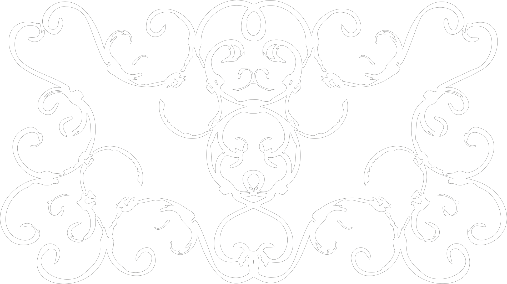
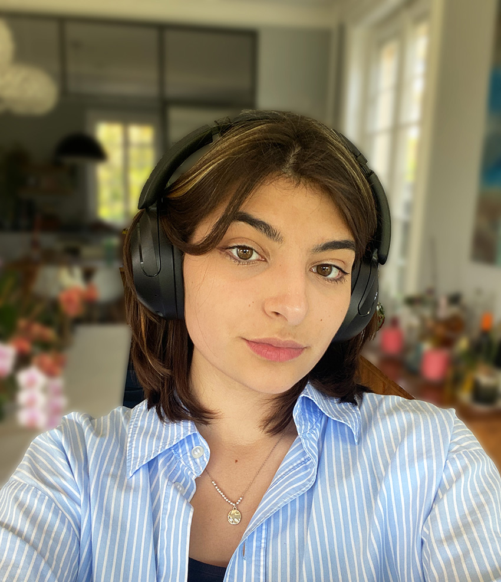

Graphic designer from Kharkiv, Ukraine, currently based in Lausanne, Switzerland. Interested in editorial design, identity and visual narratives. Working across print and digital with a focus on clarity, structure and emotion.
Education
ECAL, Lausanne — Graphic Design (2023–2026)
Foundation Year, ECAL (2022–2023)
O.M. Beketov National University, Kharkiv — Bachelor in Design
(2021–2025)
Experience
Graphic Design Intern, Dilo Sluchaya Studio, Kharkiv (Feb–Jun
2025)
Freelance projects - posters, editorial & small commissions
(2024–present)
Tools
Illustrator, Photoshop, InDesign, After Effects, Blender,
Figma,
SolidWorks, KeyShot, basic coding
Languages
Ukrainian (native), English (fluent), French (B1)